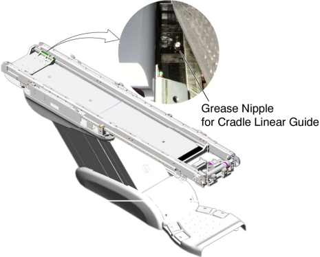
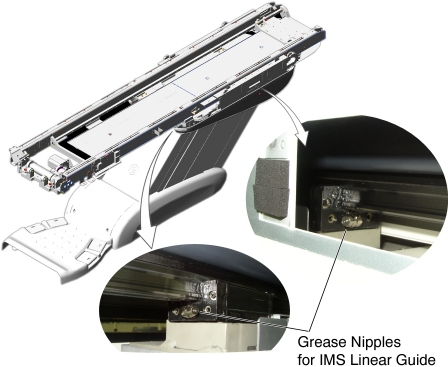

Operating Documentation
Direction 5193574-800, Rev# 22
LightSpeed 7.X Service Methods
Module Version 2.0, Version Date 10/28/08
Operating Documentation |
| Required Persons | Preliminary Reqs | Procedure | Finalization |
|---|---|---|---|
| 1 |
| Last Revised | 24 October 2008 |
| Item | Qty | Effectivity | Part# | Manufacturer | |
|---|---|---|---|---|---|
| Grease Gun (U0018BF) | 1 | - | - | - | |
| Item | Qty | Effectivity | Part# | Manufacturer |
|---|---|---|---|---|
| Shell Alvania Grease #2 (2188551) | 1 | - | - | - |
Raise the Table to maximum height.
Move the IMS and Cradle to OUT limit position.
Remove the following Table covers:
Cradle
Top Cover (Right/Left)
Rear Top Cover
Rail Cover
Illustration 1: Table Covers

Remove power from Table by turning off 120VAC, Axial Drive and HVDC switches on Service Switch Panel.
Illustration 2: Table Rails
Grease the cradle linear guide:
Move the cradle carriage forward until the grease nipple of the cradle linear guide is visible.
Attach the grease gun to the grease nipple of the cradle linear guide, and inject the grease until new grease starts to leak.
Move the cradle carriage (In limit ↔ Out limit) a few times by hand.
Illustration 3: Grease Nipple for Cradle Linear Guide

Grease the IMS linear guide:
Move the IMS forward until the rear grease nipple of the IMS linear guide is visible.
Attach the grease gun to the grease nipple of the IMS linear guide, and inject the grease until new grease starts to leak.
Attach the grease gun to the front grease nipple of the IMS linear guide, and inject the grease until new grease starts to leak.
Move the IMS (In limit ↔ Out limit) a few times by hand.
Illustration 4: Grease Nipples for IMS Linear Guide

Wipe off any excess grease.
Re-install the cradle and Table covers.
Power up the Table from the Service Switch Panel.
Verify that the cradle and IMS movement are smooth and normal.